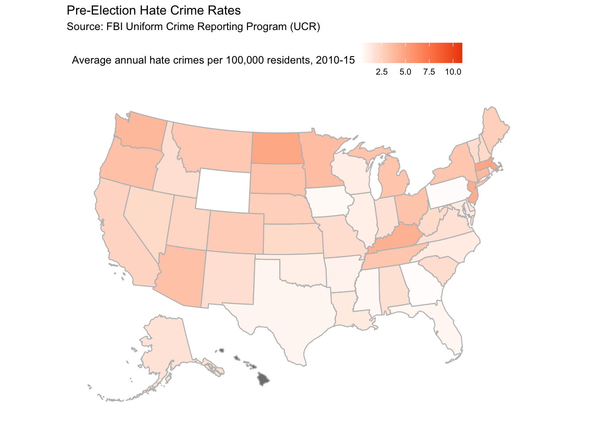
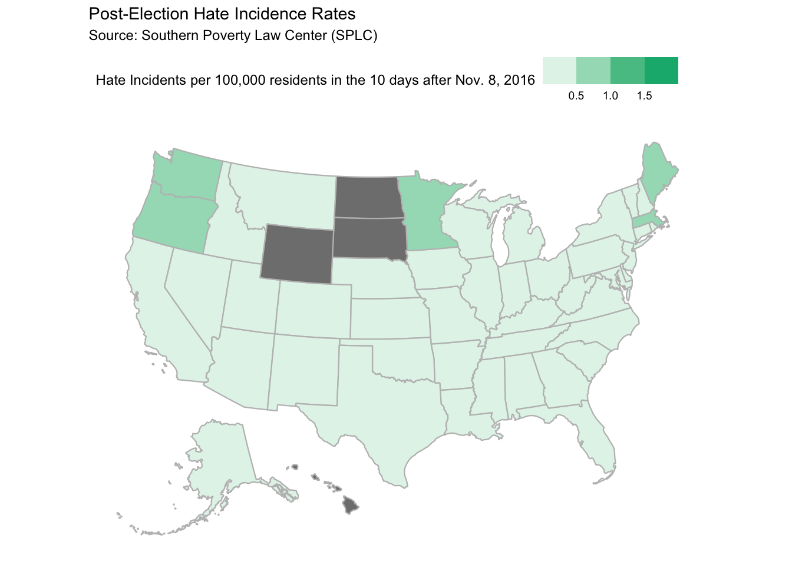

Specifically, I aim to reproduce the two provided geographic plots on pre- and post-election hate crime rates. I will utilize the provided dataset based on FBI and SPLC survey data on hate crimes, located at ../data/hate_crimes.csv.
Setup
First, we load our required packages and required dataset. We utilize the usmap library to easily plot U.S.-based geographic data, which our CSV file is compatible with. We utilize the ggplot2 library to add additional graphical customization to our plot (e.g. titles, custom scales, fills, colors, etc.).
The first figure plots pre-election hate crime rates per 100,000 residents between 2010-2015 per data sourced from the FBI Uniform Crime Reporting Program.
Code
plot_usmap(data = hate_crimes_data, values ="avg_hatecrimes_per_100k_fbi", color ="grey") +scale_fill_continuous(name ="Average annual hate crimes per 100,000 residents, 2010-15", label = scales::comma, low ="white", high ="#ed4900") +theme(legend.position ="top") +labs(title ="Pre-Election Hate Crime Rates",subtitle ="Source: FBI Uniform Crime Reporting Program (UCR)")

Figure 2: Plot post-election hate incidence rates
The second figure plots post-election hate incidence rates per 100,000 residents in the 10 days after November 8, 2016, as reported by SPLC.
Code
plot_usmap(data = hate_crimes_data, values ="hate_crimes_per_100k_splc", color ="grey") +scale_fill_binned(name ="Hate Incidents per 100,000 residents in the 10 days after Nov. 8, 2016", label = scales::comma, low ="#ffffff", high ="#00b37b") +theme(legend.position ="top") +labs(title ="Post-Election Hate Incidence Rates",subtitle ="Source: Southern Poverty Law Center (SPLC)")

Limitations and Biases
The author mentions the following biases in the original data sources used:
“The federal government doesn’t track hate crimes systematically (agencies report to the FBI voluntarily), and the Southern Poverty Law Center uses media accounts and people’s self-reports to assess the situation. Moreover, FBI hate crimes data for 2016 won’t be released for another several months, and the Southern Poverty Law Center didn’t collect data before the 2016 election. However, both data sources are publicly available and easy to navigate, which means they’re some of the best we have.
But they also have biases baked in.
The FBI Uniform Crime Reporting Program collects hate crime data from law enforcement agencies. But because the data is submitted voluntarily, it’s unclear how comprehensive the data set is. We don’t have data from Hawaii, for instance. Moreover, the UCR Program collects data on only prosecutable hate crimes, which make up a fraction of hate incidents (which includes non-prosecutable offenses, such as circulation of white nationalist recruitment materials on college campuses).
On the other hand, the Southern Poverty Law Center data — which comes from a combination of curated media accounts and self-reported form entries — includes both hate crimes and non-prosecutable hate incidents. Moreover, heightened news coverage of hate incidents after the election may have encouraged people to report incidents that they would not have otherwise reported. This is called awareness bias — a trend that is well-established in epidemiology, environmental health and other fields of research that frequently use self-reported data.”